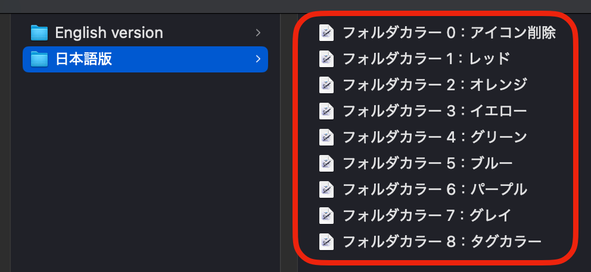
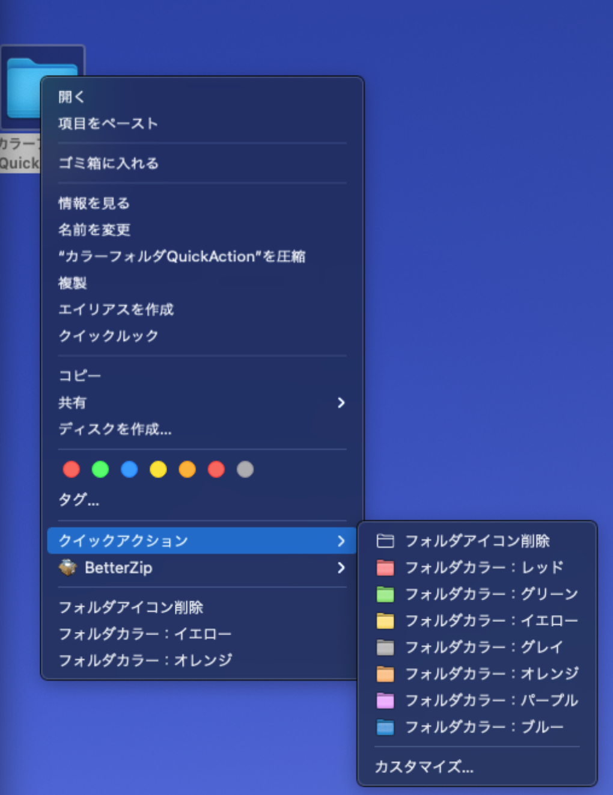

1
「Color Folders」フォルダをピクチャに入れる。
「Color Folders」フォルダを、ユーザーホーム内の「ピクチャ」フォルダに入れてください。 Quick Actionはこの中のアイコン素材と補助ツールを参照します。
名前を変えたり移動したりすると正しく動作しません。インストール後もそのまま置いておいてください。

Quick Actions
Automatorで作ったクイックアクション。 Finderで選択したフォルダに、色付きフォルダアイコンを貼り付ける！ということをしています。 TahoeではOS標準でフォルダカラーが使えるようになりましたが、それはあくまでTahoeでの話。 こちらはアイコンそのものを変更しているため、Tahoe以外でも色付きフォルダが反映されます。
Install
「Color Folders」フォルダを、ユーザーホーム内の「ピクチャ」フォルダに入れてください。 Quick Actionはこの中のアイコン素材と補助ツールを参照します。
名前を変えたり移動したりすると正しく動作しません。インストール後もそのまま置いておいてください。
Quick Actionは「日本語版」と「English version」に分かれています。 機能は同じで、Finderに表示される名前だけが違います。使いやすい方をインストールしてください。
Quick Actionをダブルクリックしてインストールします。
数は多いけど全部ダブルクリック！

Finderで色をつけたいフォルダを選び、右クリックまたはControlクリックします。
クイックアクションから、付けたい色を選ぶだけです。
